What if planning a celebration could feel as beautiful as living it?
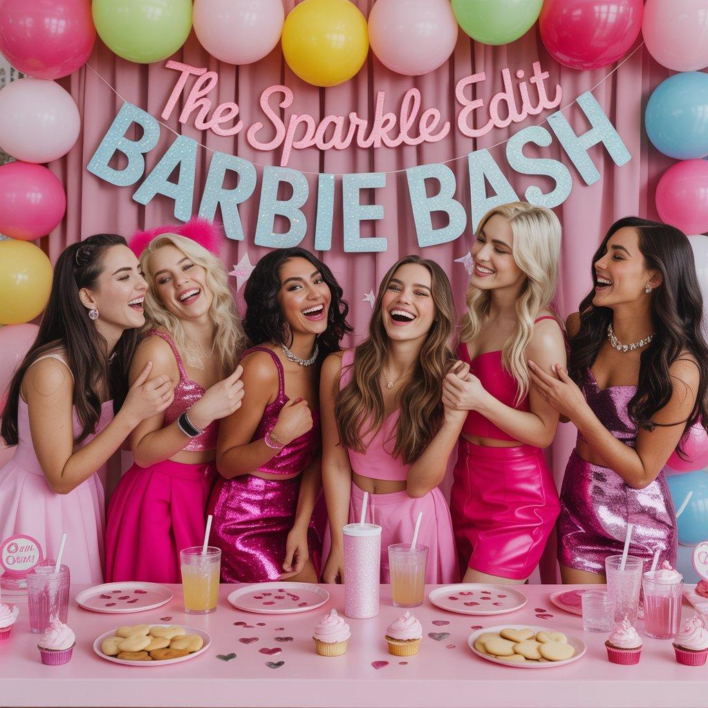
The Sparkle Edit was born from a simple idea: why are the only elegant options for celebrating limited to weddings or corporate events? We wanted something different. A space for people who want to celebrate life — birthdays, proposals, special dinners, or "just because" moments — with beauty, intention, and no stress.
This was the third and final project of the bootcamp. I proposed the original idea, the name, and the business concept to the team, and led its development from start to finish: research, segmentation, strategy design, visual content, storytelling, automation, and performance tracking. It wasn't just a case study — it was a way to apply everything we had learned, integrating creativity, technology, and conversion into a single ecosystem.
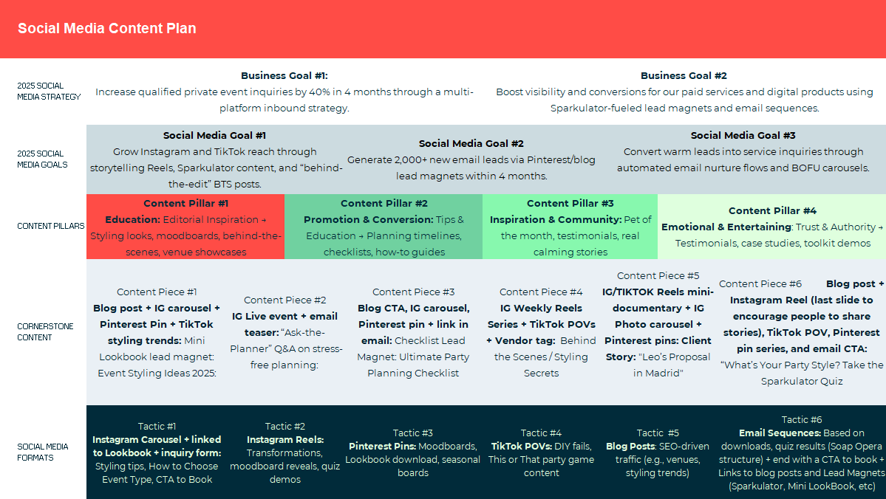
We started with deep research into the market, competitors, messaging, and SEO using tools like Semrush, SimilarWeb, and Ubersuggest.
From there, we built a strategy around three key pillars:
My role was to lead and execute the entire structure — merging emotion and technology to create a personalised and measurable experience.
We built our website on HubSpot, focused on trust, inspiration, and conversion. The structure combines an editorial-style homepage with testimonials, educational content, and well-placed CTAs — plus a fully optimised main landing page to capture qualified leads.
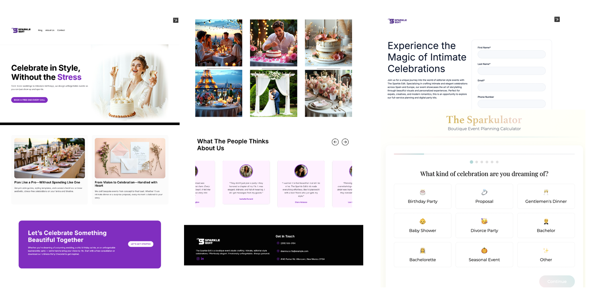
This landing page features a form emotionally aligned with the brand voice. Once submitted, it automatically triggers:
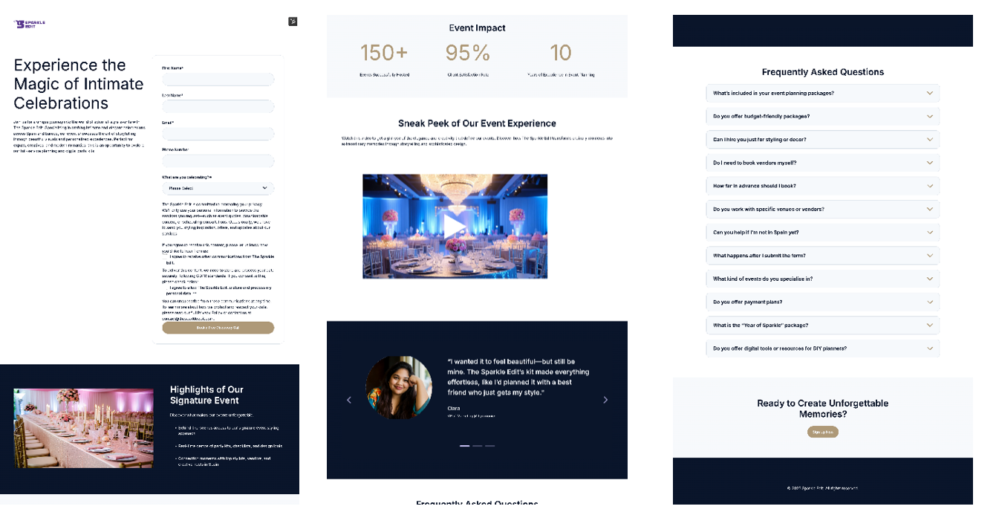
We manually connected the landing page to GTM, setting up custom tags, triggers, and variables to measure scrolls, CTA clicks, form submissions, and key funnel events. All of this is visualised in Looker Studio dashboards for channel and customer profile performance tracking.
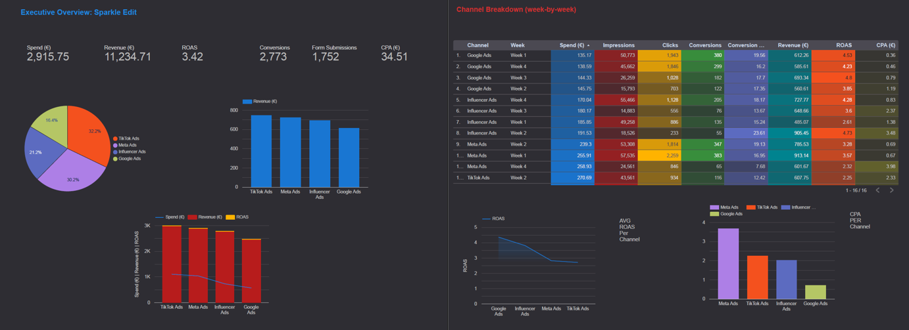
A generic landing page wouldn't have worked. Each of our personas had different motivations, expectations, and funnel stages. Creating a personalised page for Clara, Emma, and Leo allowed us to:
This was key to driving relevance, conversions, and segmentation — from the first click.
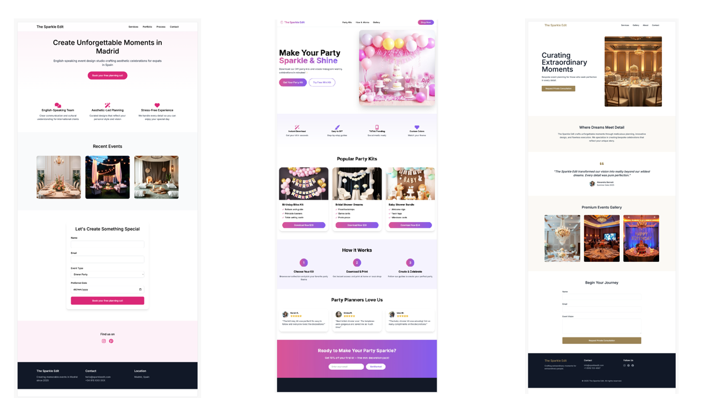
Instagram, Pinterest, and TikTok were essential for finding each persona where they were — emotionally and digitally.
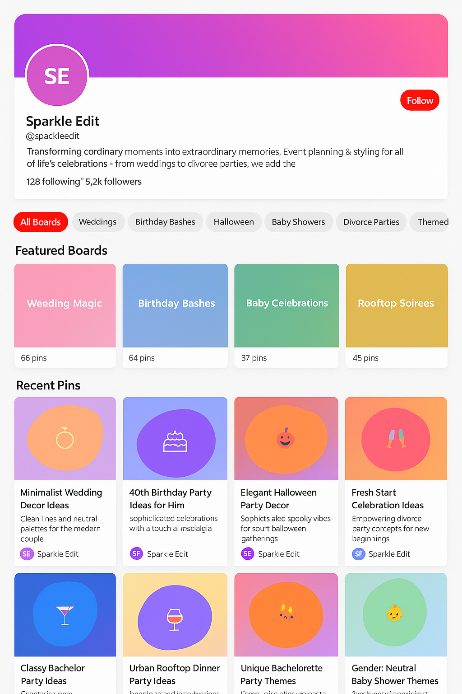
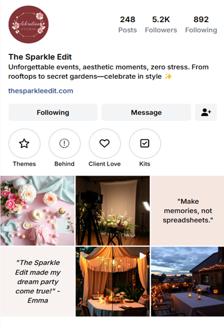
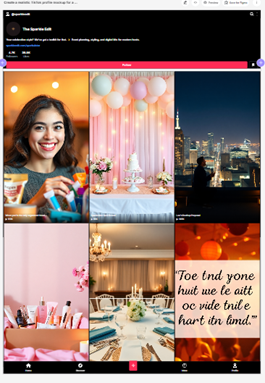
Based on our research findings, I wrote all the blog articles, designed both to rank organically and build emotional connection. Each article was integrated into the funnel, featured free resources, and linked to premium ones. All content was visually adapted for social media and played a key role in attraction and conversion. Key articles include:
This article broke the myth that a memorable party has to be expensive. It provided realistic price ranges and tips to optimise every budget item. It introduced the Sparkulator, which helped users prioritise based on their style and budget.
A tour through five popular themes with visual inspiration and examples. This blog connected with the Mini Lookbook, encouraging deeper exploration.
Aimed at those looking to plan more structured events. It explained what a good kit should include and ended with a dual invitation: download the free Party Planning Checklist or purchase the Premium Party Planner Kit. Clear conversion objective.
This article brought together unique, lesser-known venues organised by event type and style. It reinforced Sparkle's positioning as a close, authentic, and knowledgeable brand. It featured the Hidden Gems: Venue Map downloadable resource.
I set up campaigns for each persona with emotional copy, custom extensions, and performance tracking via GA4, GTM, and UTMs.
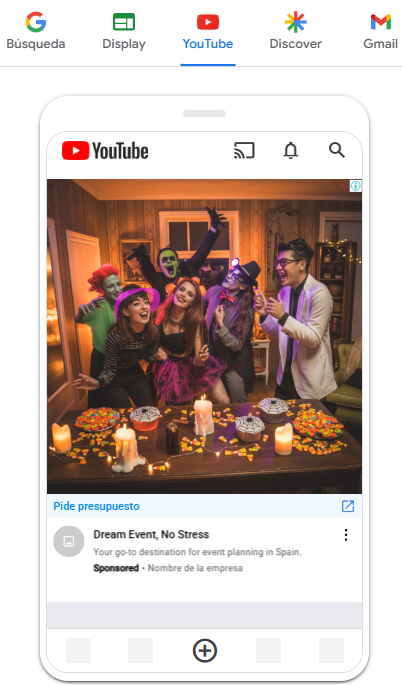
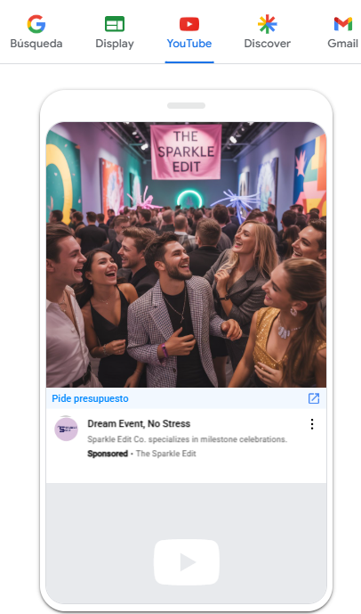
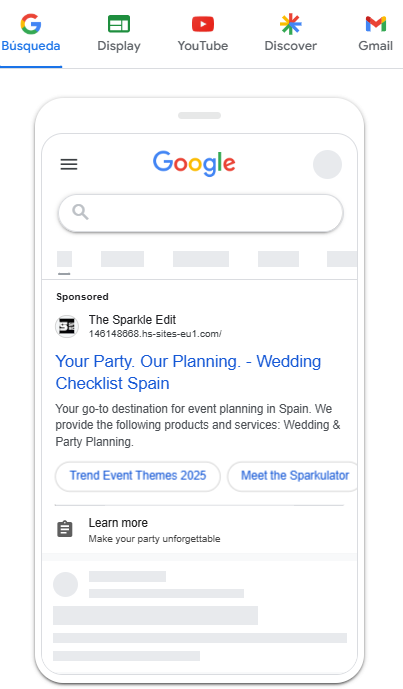
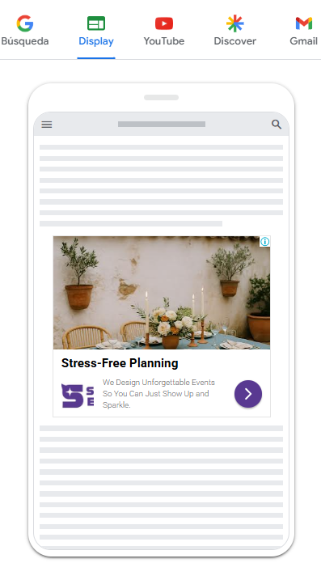
Creatives were adapted for each buyer persona, with warm visuals and direct copy linking to emotional landing pages with persona-specific resources.
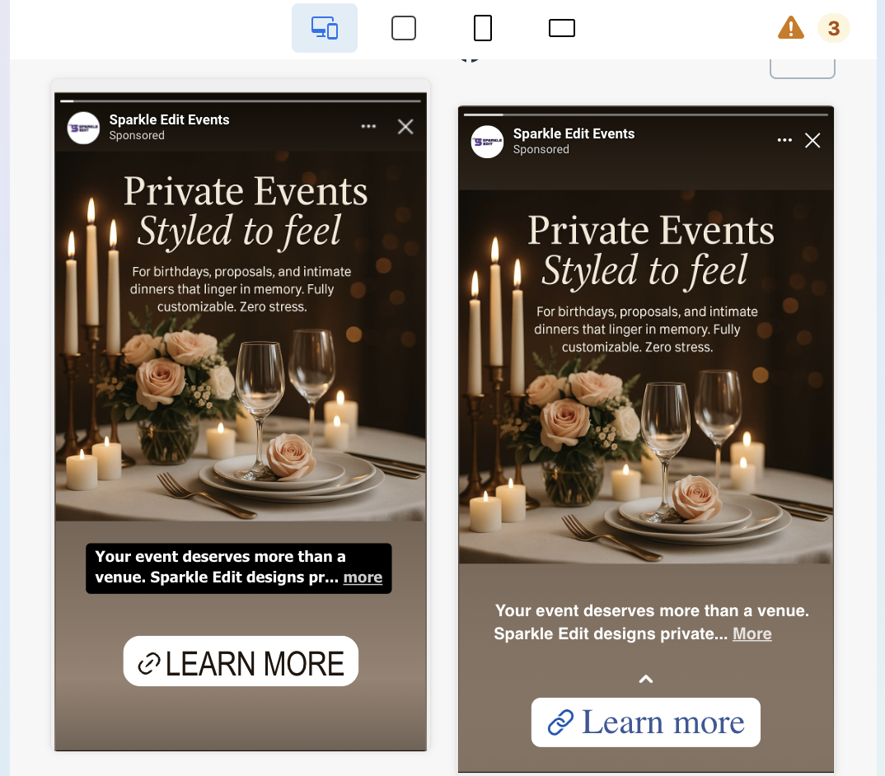
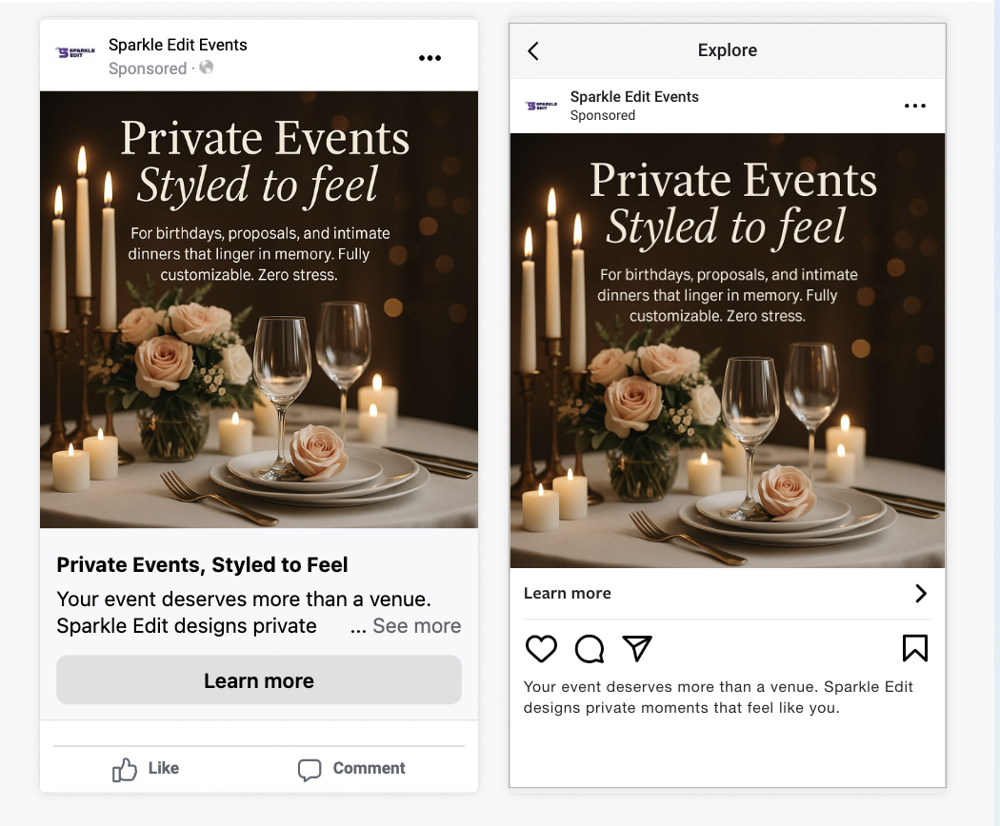
Native-style ads with aspirational tones (Leo) or fun/DIY focus (Clara). High visual appeal + simplified form for fast lead capture.
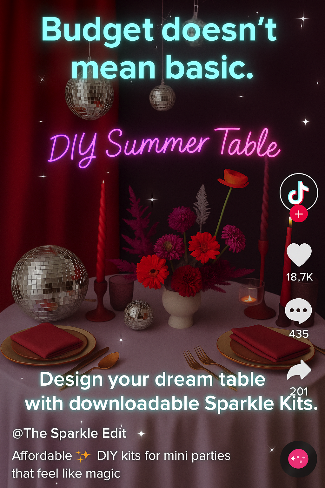
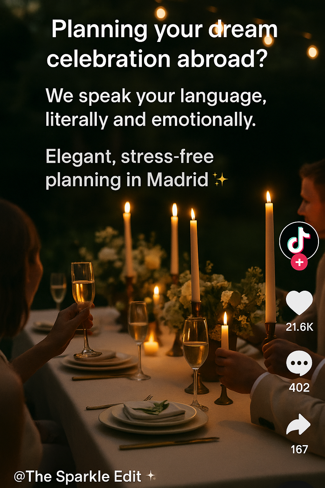
I personally created all AI-generated promotional videos for each persona (script, voice, tone, and aesthetic) using InvideoAI:
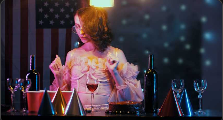
I designed a collection of downloadable resources, each with a specific function in the funnel:
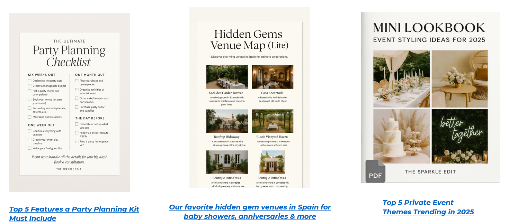
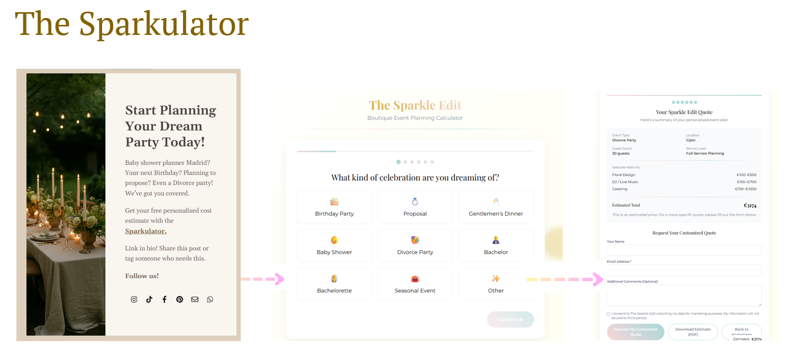
We built an automated system using Make and HubSpot to nurture leads from the first click.
Every time a user submitted a form, the system automatically segmented them by persona and launched a Soap Opera-style email sequence, written with Gemini AI prompts adapted to each profile and downloaded resource.
Emails were sent via Outlook and followed a progressive narrative:
The system adjusted dynamically based on user behaviour, creating a fluid and warm experience.
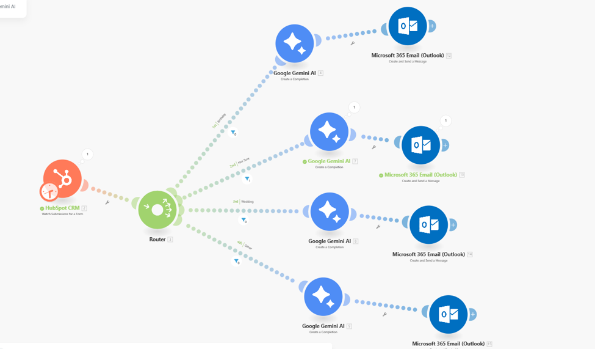
We developed a dual collaboration strategy: influencers for reach and social proof, and vendors for professional credibility and local synergy. I managed the full collaboration flow: initial segmentation (form), usage agreements, welcome kits, outreach messages, and explanatory materials.
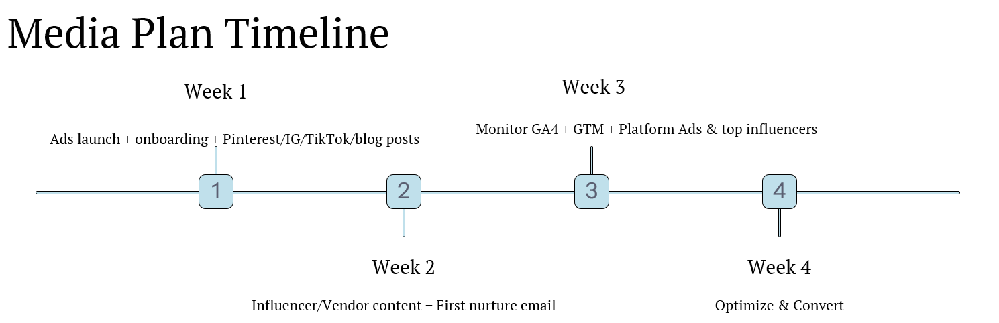
We designed a media plan with a monthly budget of €3,000:
All actions were tracked with GA4, GTM, Meta Pixel, and Looker Studio dashboards. We monitored form submissions, scrolls, clicks, downloads, and automated flows — all connected by UTMs.
Although this was a fictional project, we treated it as if it were real. We used AI and industry benchmarks to estimate the results this campaign could achieve under real conditions:
These projections were modelled using AI based on the defined structure, budget, and strategy. Results were integrated into interactive dashboards using GA4, GTM, HubSpot, and Looker Studio, enabling real-time optimisation.
This project allowed me to unite all my skills into a realistic, connected strategy. I learned to:
Above all, I confirmed that personalisation at scale is possible when strategy, tools, and storytelling work in sync.